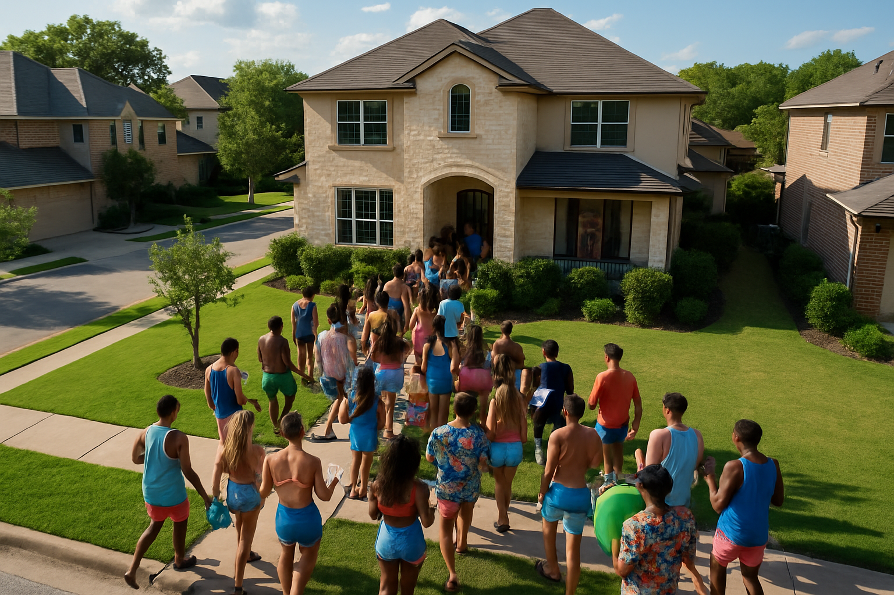

Start Here
This page starts with the three most important steps. Further reading is available below if you want more background, legal detail, or FAQs.
Contact the Office of District 10 Council Member Marc Duchen First
If a residential property has shown a pattern of event venue business that has affected your home life, email District 10 Communications Liaison taylor.crownover@austintexas.gov now.
Use this as the general entry point to explain how the activity has affected you through parking, traffic, noise, event scale, or safety concerns. This should not be limited to one specific event.
Open an email template for District 10 office outreachFor Each Major Event: File an Austin 311 Ticket
On a per-event basis, open an Austin 311 service request using:
Request Code Officer → Land Use Violation(s) → Running a Business out of a Residence
In the ticket, describe the issue as a residential property being used like a home business or event venue operation impacting neighborhood noise, traffic, parking, and safety. Avoid leading with rental-style language.
Upload strong event-specific evidence: overcrowded street parking, illegal parking, illegal activity, photo/video/audio of amplified music, and images showing pool use as part of commercial event activity.
Follow Up with District 10 Office After Each Event
After each 311 ticket, email Taylor Crownover at taylor.crownover@austintexas.gov with the 311 service request number and event-specific impacts.
Attach the same evidence you used for 311, including photos/videos/audio and any documentation showing recurring event-venue business activity.
Open an event follow-up email template for District 10 officeThe Problem Residential event venues affect neighbors through noise, parking, traffic, crowd size, and safety concerns. Expand to read more.
The Problem: Commercial Event Venues in Our Residential Neighborhood

Our quiet residential neighborhood is being disrupted by properties operating as commercial event venues without proper permits or licensing. These operations involve:
Common Violations Include:
- Commercial-scale parties: Large gatherings exceeding residential use
- Professional sound equipment: Exceeding Austin's 75-decibel residential limit
- Corporate events: Business meetings, company parties, team retreats
- Film/photo productions: Professional crews and equipment
- Multiple booking platforms: Operating across various rental websites
- Parking and traffic issues: Overwhelming residential street capacity
- Safety concerns: Large numbers of unfamiliar visitors
Impact on Our Neighborhood
Commercial event venues operating in residential areas create significant problems that affect every aspect of our community:
Traffic and Infrastructure Impact
Residential streets and infrastructure weren't designed for commercial-level traffic. Events with 40-70 guests can generate 80-140 vehicle trips in a single day, creating:
- Parking shortages: Guests overflow onto neighboring properties and block driveways
- Road wear: Heavy traffic damages residential street surfaces not built for commercial use
- Emergency access: Crowded streets can impede emergency vehicle response
- Pedestrian safety: Increased traffic endangers children and families in our walking-friendly neighborhood
Safety and Security Concerns
Regular streams of strangers attending commercial events create ongoing security risks:
- Unknown visitors: Dozens of unfamiliar people regularly entering the neighborhood
- Alcohol-related incidents: Party venues often involve drinking, increasing risk of disturbances
- Property security: Constant flow of visitors makes it difficult to identify suspicious activity
- Children's safety: Parents can't distinguish between neighbors and commercial event guests
Property Values and Marketability
Commercial operations in residential areas directly impact property values and sales prospects:
- Market stigma: Properties near commercial venues often sell for less and take longer to sell
- Buyer deterrence: Few families want to live next to a commercial event venue
- Financing complications: Lenders may be hesitant to finance homes near commercial operations
- Professional disclosure expectations: Real estate agents have broader duties to inform buyers about neighborhood conditions that could affect decisions
Reporting Details Contact District 10 office first if the venue has been affecting you over time. Then, for each major event, file a 311 land-use report and follow up with Taylor Crownover. Expand to take action.
1. Start by contacting the office of District 10 Council Member Marc Duchen
If a residential property has shown a pattern of event venue business that has affected your household, email District 10 Communications Liaison taylor.crownover@austintexas.gov even if you are not writing about a single event that day.
Your email should explain the overall pattern and how it has affected your use and enjoyment of your home. Describe recurring issues such as:
- amplified music or ongoing noise,
- heavy traffic entering and leaving the property,
- parking congestion, blocked driveways, or cars lining the street,
- large numbers of guests or commercial-scale gatherings,
- safety concerns caused by crowd size, unfamiliar visitors, or impaired street access.
Suggested body:
Hello Ms. Crownover,
I am writing to report what appears to be an event venue business operating from a residential property at [PROPERTY ADDRESS] that has been affecting my household and neighborhood over time.
The recurring impacts have included [NOISE], [TRAFFIC], [PARKING], [EVENT SCALE], and [SAFETY CONCERNS].
I wanted to make sure this issue is on your radar because it appears to involve an ongoing pattern of commercial event activity in a residential area, not just a single isolated incident.
My name is [YOUR NAME], and I live at [YOUR ADDRESS OR NEARBY LOCATION].
Thank you for your time and support.
[YOUR NAME]
2. For each major event, open an Austin 311 service request
Open the Austin 311 service request form and use the following selections:
Choose These Options
- Service Type: Request Code Officer
- Violation Type: Land Use Violation(s)
- Land Use Violation: Running a Business out of a Residence
What to put in “Additional Details”
Describe the activity as an event venue business or a commercial event operation occurring at a residential property. Include the event-specific impacts you observed, such as noise, traffic, parking, scale, or safety concerns.
What to upload
Upload evidence that substantiates your concerns regarding noise, traffic, parking, scale, safety, and event-venue business use. Include photos of overcrowded street parking, photos of illegal parking, photos of illegal activity, video/audio recordings of amplified music or noise, and photos showing pool use as part of commercial event operations.
3. Follow up with Taylor Crownover after each major event
After opening the 311 ticket, follow up with taylor.crownover@austintexas.gov and include the 311 service request number if available.
This helps connect your broader pattern-of-impact email with event-specific reports and documentation. Attach any supporting photos/video/audio and other evidence files in your follow-up email whenever possible.
Suggested body:
Hello Ms. Crownover,
I am following up regarding what appears to be an event venue business operating from the residential property at [PROPERTY ADDRESS].
For the event on [DATE OR TIMEFRAME], I submitted an Austin 311 service request under land-use violation reporting. The 311 service request number is [311 SERVICE REQUEST NUMBER].
The event caused the following impacts: [NOISE], [TRAFFIC], [PARKING], [EVENT SCALE], and [SAFETY CONCERNS].
I have attached event evidence for review, including photos/video/audio and other documentation related to this incident.
I am sending this follow-up so this event-specific incident can be connected to the broader pattern of commercial event activity affecting the neighborhood.
Thank you for your time and support.
[YOUR NAME]
[YOUR ADDRESS OR NEARBY LOCATION]
Your Rights Residents have protections under noise rules, deed restrictions, and zoning laws. Expand to read more.
Your Rights as a Resident
Austin Noise Ordinance Rights
Austin Code of Ordinances Title 9, Chapter 9-2 protects residential areas:
Note: 75 decibels is roughly equivalent to highway traffic noise - not very loud. Professional DJ equipment at parties clearly exceeds this limit.
Deed Restriction Rights
Northwest Hills of Lakeview Section III deed restrictions specifically prohibit:
Section II.H: "No noxious or offensive activities shall be carried on or upon any Lot, nor shall anything be done thereon which may be or may become an annoyance to the neighborhood."
Section II.J: "No merchandising, advertising and sales programming shall be conducted on any Lot without the prior approval of the Developer."
Zoning Rights
Residential properties cannot legally operate as commercial event venues under Austin zoning laws. Commercial activities require:
- Proper commercial zoning designation
- Business licenses and permits
- Commercial property tax rates
- Hotel occupancy tax collection
Legal Violations These properties may violate home occupation rules, noise restrictions, deed restrictions, and other land-use requirements. Expand to read more.
Legal Violations
City Code Violations
- Zoning Violation: Commercial use in residential zone
- Noise Ordinance: Exceeding 75-decibel limit
- Business Licensing: Operating without proper permits
- STR Licensing: Short-term rental without city license
- Tax Evasion: Not collecting/paying hotel occupancy taxes
Austin City Code § 25-2-900 - Home Occupations (Full Text)
Why this matters: This code section directly limits traffic, noise, and commercial-scale activity from homes, which is central to the event venue enforcement issue.
(A) A home occupation is a commercial use that is accessory to a residential use. A home occupation must comply with the requirements of this section.
(B) A home occupation must be conducted entirely within the dwelling unit or an accessory structure.
(C) Participation in Home Occupation.
(1) Except as otherwise provided in this subsection, participation in a home occupation is limited to occupants of the dwelling unit.
(2) A person who does not reside on-site may participate in a home occupation if the home occupation is:
- (a) a medical, professional, administrative, or business office;
- (b) an art workshop or gallery;
- (c) a music, dance, or photography studio; or
- (d) handicraft or hobby instruction.
(D) The residential character of the lot and dwelling must be maintained. A home occupation that requires a structural alteration of the dwelling to comply with a nonresidential construction code is prohibited. This prohibition does not apply to modifications to comply with accessibility requirements.
(E) A home occupation may not generate more than three vehicle trips each day of customer-related vehicular traffic.
(F) Except for materials and equipment used in an art workshop, equipment or materials associated with the home occupation must not be visible from locations off the premises.
(G) A home occupation may not produce noise, vibration, smoke, dust, odor, heat, glare, fumes, electrical interference, or waste run-off outside the dwelling unit or accessory structure.
(H) Parking a commercial vehicle on the premises or on a street adjacent to residentially zoned property is prohibited.
(I) Advertising a home occupation by a sign on the premises is prohibited, except as provided under Section 25-10-156 (Home Occupation Signs). Advertising the street address of a home occupation through signs, billboards, television, radio, or newspapers is prohibited.
(J) The following are prohibited as home occupations:
- (1) animal hospitals, animal breeding;
- (2) clinics, hospitals;
- (3) hospital services;
- (4) contractors yards;
- (5) scrap and salvage services;
- (6) massage parlors other than those employing massage therapists licensed by the state;
- (7) restaurants;
- (8) cocktail lounges;
- (9) rental outlets;
- (10) equipment sales;
- (11) adult oriented businesses;
- (12) recycling centers;
- (13) drop-off recycling collection facilities;
- (14) an activity requiring an H-occupancy under Chapter 25-12, Article 1 (Uniform Building Code);
- (15) automotive repair services; and
- (16) businesses involving the repair of any type of internal combustion engine, including equipment repair services.
Deed Restriction Violations
- Non-residential use: Commercial venue operation
- Neighborhood nuisance: Ongoing disturbance to residents
- Commercial advertising: Marketing without developer approval
Property Impact
Real Estate Professional Disclosure Obligations
While Texas Property Code Section 5.008 focuses on the condition of the property being sold, real estate professionals have broader disclosure duties:
Real estate agents have professional obligations to disclose:
- Neighborhood conditions: Commercial operations that affect residential character
- Ongoing issues: Noise, traffic, or safety concerns from neighboring properties
- Material facts: Any conditions that would reasonably affect a buyer's decision to purchase
- Market conditions: Factors that impact property values and neighborhood desirability
Property Value and Marketability Impact
Recognizing Commercial Operations Event venue activity often leaves visible clues such as large gatherings, professional equipment, overflow parking, and online marketing. Expand to read more.
Recognizing Commercial Operations
Commercial event venues operating in residential areas often share similar characteristics:
Professional Equipment: Commercial-grade sound systems that exceed residential noise limits
Commercial Service: Professional event setups indicating business operations
Scale Concerns: Large groups that disrupt residential neighborhood peace
Traffic Impact: Parking and traffic that overwhelms residential infrastructure
How to Investigate
If you suspect a neighbor is operating a commercial venue, you can research their activities:
- Check rental platforms: Search Peerspace, Swimply, Giggster, and Eventup for local listings
- Look for business marketing: Professional social media accounts or websites
- Document patterns: Regular large gatherings, commercial equipment, professional services
- Review customer feedback: Online reviews often reveal the commercial nature and scale of operations
Frequently Asked Questions The FAQ is still here, but each question is optional reading so the page is easier to scan. Expand to read more.
1. Why are these “event venues” a commercial operation and not a short-term rental?
Understanding this distinction is crucial for enforcement and legal action:
Short-Term Rental Legal Definition
Short-term rentals are legally defined as "properties typically rented for less than 30 days" for the primary purpose of temporary lodging. Key characteristics include:
- Sleeping accommodations: Guests rent dwelling space to sleep and lodge temporarily
- Residential use: The property functions as a temporary residence for visitors
- Limited occupancy: Typically designed for family-sized groups seeking lodging
- Overnight stays: The rental period assumes guests will sleep on the premises
Assembly/Event Venue Legal Definition
Event venues fall under "Assembly Occupancy" as defined by the International Building Code and International Fire Code:
Key characteristics that distinguish event venues as commercial assembly operations:
- Gathering purpose: "Gatherings of 50 persons or more for civic, social, or religious functions"
- Social functions: Events focused on entertainment, celebration, or business purposes
- Food/drink consumption: Parties involving catering, bars, or social dining
- Commercial-scale occupancy: Events regularly exceeding residential capacity limits
- Assembly safety requirements: Properties with 50+ occupants trigger assembly occupancy safety regulations
Critical Legal Distinction: The “Single Party” Rule
Even if someone tries to claim their event venue qualifies as a short-term rental, Austin's STR regulations themselves prohibit party venue operations:
This provision creates a clear legal barrier between legitimate STRs and event venues:
- "Single party" defined: A cohesive group traveling together (family, friends, colleagues on a trip)
- Event venues violate this: Parties and events inherently involve multiple distinct parties—the host, various guest groups who arrive separately, vendors, and attendees who don't know each other
- Wedding example: A wedding reception involves the bride's family, groom's family, friends from work, college friends, neighbors—clearly multiple parties, not a single party
- Corporate event example: Company parties bring together employees from different departments who constitute multiple parties, not a single cohesive group
2. Don’t homeowners have a right to run a home business?
While Texas law generally supports property rights, homeowners in residential areas have significant legal limitations on commercial activities:
Zoning Restrictions
Austin's zoning ordinances strictly regulate home businesses in residential areas. Event venues are explicitly prohibited because they:
- Generate commercial-level traffic incompatible with residential streets
- Create noise and disturbances beyond what's allowed in residential zones
- Require assembly occupancy permits and safety measures not available in residential properties
- Violate the fundamental purpose of residential zoning—to preserve quiet enjoyment for families
Deed Restrictions Override Property Rights
When homeowners purchase property with deed restrictions, they voluntarily agree to limitations. Northwest Hills deed restrictions explicitly state:
These are legally binding contracts that courts consistently enforce, even against claims of property rights.
Permitted Home Businesses vs. Event Venues
Austin does allow certain home-based businesses that:
- Don't generate customer traffic (online businesses, consulting)
- Don't create noise or disturbances
- Don't employ non-resident staff on-site
- Don't change the residential character of the property
Event venues violate all of these conditions, making them illegal home businesses.
3. How are deed restrictions enforced?
Deed restrictions are private legal agreements that run with the land and bind all property owners in the subdivision. Here's how enforcement works:
Who Can Enforce
- Any property owner in the subdivision has legal standing to enforce deed restrictions
- Homeowners associations often take the lead but aren't required
- Groups of neighbors can join together to share legal costs
Enforcement Process
- Documentation: Gather evidence of violations (photos, videos, advertisements, witness statements)
- Demand letter: Attorney sends formal notice demanding compliance
- Negotiation: Often violations stop after receiving legal notice
- Legal action: File lawsuit in district court if violations continue
- Court order: Judge issues injunction stopping the commercial use
Financial Considerations
Courts in Texas regularly enforce deed restrictions and have the power to:
- Issue permanent injunctions stopping commercial activities
- Award monetary damages for lost property value
- Require violators to pay attorney fees and court costs
- Hold violators in contempt for ignoring court orders
4. I’m being told by Austin police that noise ordinance laws don’t apply until 10pm. What’s happening?
This is a serious and widespread problem caused by incorrect training and misinformation within APD. Here's what you need to know:
The Actual Law
Austin City Code Title 9, Chapter 9-2 clearly states:
During nighttime (10pm-7am): No audible sound from sound equipment beyond property line
The Misinformation Problem
Many APD officers incorrectly believe:
- ❌ "There's no noise limit until 10pm" - FALSE
- ❌ "People can make any amount of noise during the day" - FALSE
- ❌ "75 decibels only applies at night" - FALSE
What You Can Do
- Know the ordinance number: Title 9, Chapter 9-2, Section 9-2-5
- Request a supervisor: If an officer gives incorrect information
- Document everything: Record interactions and get badge numbers
- Contact APD District Representative: Report training issues to Officer Andrew Kabbah
- File formal complaints: Use APD's complaint system for persistent problems
- Contact City Council: Report systemic enforcement failures
5. How do nearby event venues affect selling my home?
Living next to commercial event venues significantly impacts property marketability and value:
Market Reality
Properties near commercial event venues face substantial challenges:
- Buyer deterrence: Most families avoid homes near party venues
- Value reduction: Properties near nuisances typically sell for 5-10% less
- Extended marketing time: Homes take longer to sell
- Financing difficulties: Lenders may be hesitant about properties near commercial operations
- Limited buyer pool: Fewer interested buyers means less competition and lower offers
Real Estate Professional Obligations
While Texas Property Code Section 5.008 focuses on the condition of the property being sold, real estate agents have broader professional disclosure duties:
- Material neighborhood conditions: Agents should disclose commercial operations affecting residential character
- Ongoing disturbances: Noise, traffic, or safety concerns from neighboring properties
- Market factors: Conditions that impact property values and desirability
Protecting Your Investment
To protect your property value:
- Document the violations: Build evidence of illegal commercial operations
- Pursue enforcement: Work to stop violations before selling
- Work with knowledgeable agents: Choose professionals who understand neighborhood disclosure issues
- Consider legal action: Deed restriction enforcement can stop commercial operations and protect values
6. The owners of these event venues are just trying to make a living.
While we understand economic pressures, this argument doesn't justify violating laws and destroying neighborhood quality of life:
Legal Business Options Exist
Property owners who want to run event venues have legal options:
- Purchase property in commercially zoned areas
- Apply for proper zoning changes and permits
- Operate legitimate, licensed businesses that pay taxes
- Rent their homes as actual STRs (for lodging, not events)
The Real Costs to Neighbors
Illegal event venues impose significant costs on everyone else:
- Property values: Neighbors lose tens of thousands in home equity
- Quality of life: Families can't enjoy their own homes and yards
- Safety: Children are exposed to risks from constant strangers
- Infrastructure: Residents pay for road damage from commercial traffic
- Tax fairness: Event venues avoid commercial property taxes and hotel taxes
This Is About Fairness
When someone buys property in a residential neighborhood with deed restrictions, they agree to the rules. Breaking those rules to make money while destroying neighbors' property values and peace isn't entrepreneurship—it's exploitation.
7. What if the venue owner claims they’re just having “friends” over?
This is a common deflection tactic, but the evidence clearly distinguishes commercial operations from personal gatherings:
Commercial Operations Leave Clear Evidence
- Online listings: Properties advertised on Peerspace, Swimply, etc.
- Customer reviews: Dozens or hundreds of reviews from paying customers
- Business marketing: Instagram business accounts, websites, promotional materials
- Payment processing: Regular commercial transactions through platforms
- Pattern of strangers: Different groups every week who don't know the owners
Legal Standards
Courts look at the "totality of circumstances" including:
- Frequency of events (weekly vs. occasional)
- Commercial equipment (professional sound systems, event furniture)
- Money changing hands (rental fees, deposits)
- Advertising and marketing efforts
- Scale exceeding normal residential use
When properties have 131+ customer reviews and regular 40-70 person events, the "just friends" defense doesn't hold up in court.
8. Can I remain anonymous when reporting violations?
Yes, there are several ways to report violations while protecting your identity:
Anonymous Reporting Options
- 311 App: Can be used anonymously for code violations
- NWACA: Can coordinate community response without revealing individuals
- Multiple neighbors: Group complaints protect individual identity
- City enforcement: Let government agencies be the enforcer, not you personally
Why Anonymity Matters
Protecting your identity helps avoid:
- Retaliation or harassment from venue operators
- Uncomfortable neighbor relationships
- Being targeted on social media or review sites
- Potential property damage or vandalism
9. What if I’m worried about being labeled a “NIMBY” or “Karen”?
Standing up for your legal rights and quality of life doesn't make you unreasonable. Here's perspective on this concern:
You're Protecting Legal Rights
You're not opposing legitimate development or legal businesses. You're enforcing:
- Existing zoning laws designed to protect residential areas
- Deed restrictions everyone agreed to when buying property
- Noise ordinances that ensure peaceful enjoyment
- Tax laws requiring businesses to pay their fair share
The Real Issue
This isn't about stopping progress or being anti-business. It's about:
- Appropriate location: Commercial businesses belong in commercial zones
- Following rules: Everyone else manages to follow zoning laws
- Protecting families: Children deserve safe, quiet neighborhoods
- Preserving investment: Your home is likely your largest asset
Response to Name-Calling
If someone tries to dismiss your concerns with labels, remember:
- They're deflecting from their illegal activities
- Name-calling doesn't change the law
- You have broad community support
- Courts consistently uphold residential protections
10. What happens if the city won’t enforce the laws?
You have multiple escalation paths if initial enforcement efforts fail:
Political Pressure
- City Council: Attend meetings, organize neighbors to speak
- Media attention: Local news often covers neighborhood quality issues
- Election accountability: Support candidates who enforce residential protections
Legal Action
- Deed restriction lawsuit: Private enforcement with attorney fee recovery
- Nuisance claims: Sue for damages and injunctive relief
- Mandamus action: Force city to enforce its own ordinances
Community Organization
- NWACA involvement: Leverage neighborhood association resources
- Petition drives: Demonstrate widespread community opposition
- Documentation campaign: Build overwhelming evidence file
Who To Contact District 10 office comes first for the broad neighborhood impact. Austin 311 is then used on a per-event basis, followed by Taylor Crownover updates. Expand to take action.
Start with District 10 Council Member Marc Duchen's office, specifically Taylor Crownover, if the residential event venue has been affecting your household over time. Then use Austin 311 on a per-event basis and follow up with Taylor with your 311 case number and evidence. The remaining contacts can still be useful, but they are generally secondary.
District 10 Office (Marc Duchen) - Taylor Crownover
Office: district10@austintexas.gov
Purpose: Initial outreach about recurring event venue business impacts and event-by-event follow-up with 311 case numbers and evidence
Austin 311
Phone: Call 3-1-1
Purpose: Submit a new land-use complaint for each major disruptive event using “Request Code Officer” → “Land Use Violation(s)” → “Running a Business out of a Residence”
Eric Gardner
Purpose: Secondary reference contact if needed after District 10 office and 311 outreach are already in motion
NWACA (Northwest Austin Civic Association)
Website: nwaca.org
Purpose: Community advocacy, neighborhood coordination, and deed restriction guidance
Officer Andrew Kabbah
Email: andrew.kabbah@austintexas.gov
Purpose: Noise ordinance enforcement, community policing
District 10 Council Member Marc Duchen
Purpose: Policy advocacy and city enforcement support through the District 10 office team
Mayor Pro Tem Vanessa Fuentes
Purpose: STR enforcement reforms, revenue collection, policy advocacy
Additional Action Guidance Essential first steps are at the top of the page, but there's still more you can do. Expand to take action.
After your initial steps in Reporting Details, here are other actions you can take to keep building the record and seeking support.
1. Contact Your Representatives
- Neighborhood advocacy: Email NWACA info@nwaca.org
- City policy support: Contact District 10 and Mayor Pro Tem offices after you have begun building a record through 311 and code enforcement
- Noise enforcement issues: Work with APD District Representative if you encounter difficulty with police response
2. Know Your Legal Options
- Deed restrictions: Private enforcement rights with attorney fee recovery
- Property rights: Protection from commercial intrusion
- Nuisance law: Ongoing disturbance remedies
Sample Communication
When contacting officials, include:
- Property address of concern
- Date and approximate time of the event
- Description of the event venue business activity you observed
- Specific impacts involving noise, traffic, parking, scale, or safety
- Photos or other documentation, if available
- Your Austin 311 service request number, if you have one
Sample Email to City Council Member Marc Duchen
Dear Council Member Duchen,
I am writing as your constituent in Northwest Hills regarding what appears to be an illegal commercial event venue operating at [PROPERTY ADDRESS]. I have reported the matter to your office, including Communications Liaison Taylor Crownover, because this activity has been affecting my household and neighborhood over time, and I have also used Austin 311 to document major disruptive events. This residential property appears to be operating in violation of multiple city ordinances while undermining the quiet, family-friendly character of our neighborhood.
The violations are clear and documented:
• Land-use violation - operating an event venue business from a residence
• Noise ordinance violations - professional sound equipment exceeding 75dB residential limit
• Ongoing event activity causing neighborhood impacts related to noise, traffic, parking, scale, and safety
• Deed restriction violations prohibiting commercial use
This property regularly hosts 40-70 person commercial parties, generating excessive vehicle trips that overwhelm our residential streets. My family cannot enjoy our backyard due to constant noise, and we have concerns about safety with large numbers of unfamiliar visitors regularly entering our neighborhood.
I have attached supporting evidence, including photos/video/audio and documentation related to these repeated events.
I am requesting immediate action:
1. Continued Code Compliance investigation and enforcement for land-use violations
2. Coordination across city departments as needed to address repeated event activity at this residence
3. Support for consistent enforcement when these events create ongoing neighborhood impacts
We chose Northwest Hills for its residential character, and we expect our city's laws to be enforced consistently. Commercial event venues belong in properly zoned commercial districts, not residential neighborhoods. I look forward to your prompt response and action on this matter.
Respectfully,
[YOUR NAME]
[YOUR ADDRESS]
[YOUR PHONE NUMBER]
Contact Us
We are fellow neighbors working to protect the residential character of Northwest Hills. If you have questions, need assistance, or want to share your experiences:
Together we can maintain Northwest Hills as the quiet, family-friendly neighborhood we chose to call home.